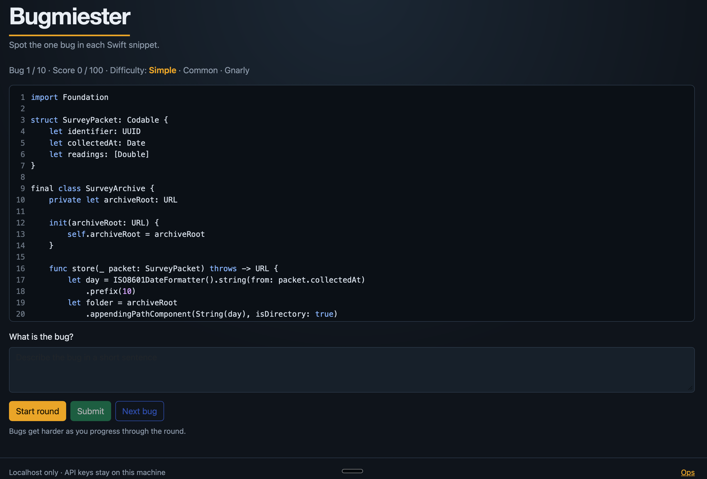
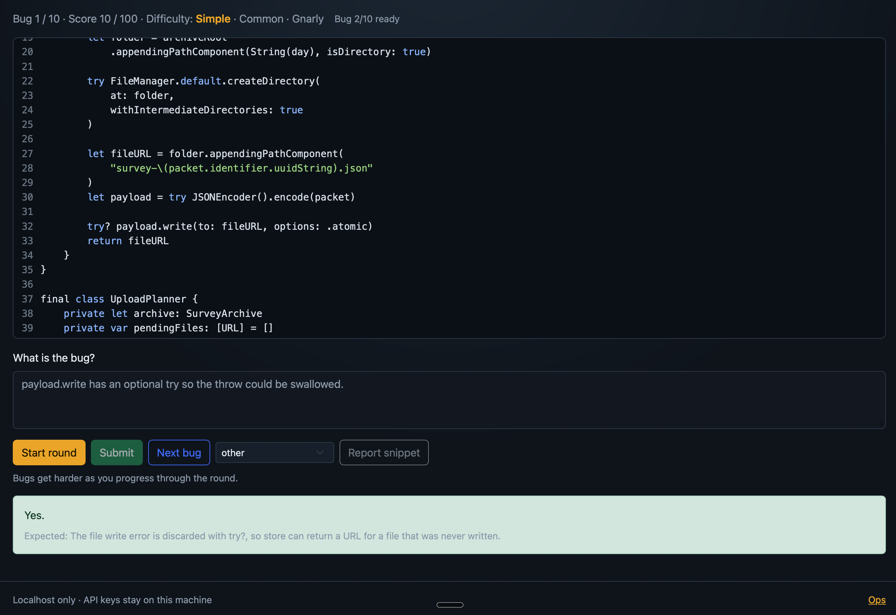
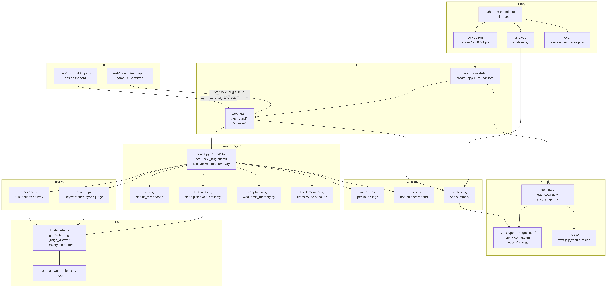

The problem
Interview and practice tools usually give you either a multiple-choice quiz or a live LLM chat, and neither one trains the skill I actually need.
I needed to read a short Swift snippet and name the one real bug in free text. I also needed a fair score, and I did not want to ship API keys to a browser or a hosted service to get it.
Why I built it
Day to day, I write Swift with AI now. That is useful, but it can dull the habit of spotting bugs by eye.
Bugmiester is how I keep that skill sharp. It is a local trainer where I still have to read the code and name the bug myself. The model writes the snippets and helps with scoring, but the reading stays my job.
What I built
Bugmiester is a FastAPI app on 127.0.0.1:8765. Each round delivers 10 short snippets with exactly one bug each, you type what the bug is, and hybrid scoring awards up to 100 points. Keys and config live under ~/Library/Application Support/Bugmiester/. The UI is static HTML, JavaScript, and Bootstrap, and an ops dashboard sits at /ops. Swift is the default language pack, and JavaScript, Python, Rust, and C++ are also registered.
You launch it with python -m bugmiester.
Three decisions
These are the three choices I would defend in a design review.
1. The trust boundary is the product.
Secrets stay in the Application Support .env, and the browser never sees a key. The server withholds the answer key on next-bug and reveals it only on submit or after recovery, and it binds to localhost. That combination is what I am shipping, and it is the reason Bugmiester is more than a chat wrapper with a skin. Practice only means something if I cannot peek at the expected answer or grab a key from the page before I commit, and I was counting on the boundary to enforce that. For a machine I sit at, binding to localhost with secrets in Application Support is enough trust. The page gives me no way to paste a key into the frontend or to see the expected text before I have typed mine, and that is why the round stays honest.
2. Scoring is built for fairness, not for the LLM.
Keywords run first and sort an answer into strong, weak, or miss, and the LLM judge runs only on a miss. Give-up phrases score zero without a judge call. On a partial, a recovery quiz offers shuffled choices and does not leak the expected summary while the quiz is open. I built the hybrid path so close wording earns credit even when it does not match the expected summary word for word, and so I do not pay for a judge call on every strong keyword hit. It also means "I give up" never farms a free model pass. Keyword-first stays the happy path, and the judge stays a backstop. A fixed offline eval suite and a documented acceptance checklist guard every scoring change, because fairness has to be measurable, and without them I would end up reshaping scoring on gut feel and my mood that day.
3. Curriculum is a system, not a prompt.
senior_mix ramps Simple → Common → Gnarly. For freshness, the engine uses scenario seeds, an avoid-list, and a similarity reject, with a canned fallback when generation is exhausted. Language packs keep the engine language-agnostic, so it is not hard-wired to Swift. Adaptation watches the isolation cluster (MainActor, sendable, concurrency). If Common-band misses pile up, Gnarly is delayed and Common gets reinforced first, while strong players see no change. I wanted difficulty and variety to come from rules I can inspect, because a ramp only teaches when I can see how it works, and hoping the model keeps things interesting does nothing to stop repeats from feeling identical. Someone struggling with concurrency gets more Common practice before Gnarly without being punished for the misses, and strong play stays uninterrupted by adaptation meant for someone else.
Proof
You can open a round on localhost and watch the score path yourself.


payload.write has an optional try so the throw could be swallowed. The feedback was Yes, the expected answer was a file write error discarded with try?, and the score came to 10 / 100.

python -m bugmiester) and branches into serve / analyze / eval. From there it covers FastAPI HTTP and the game + ops UI, the RoundEngine (mix, freshness, adaptation), ScorePath, the LLM facade, OpsData, and Config and language packs.
The public repo and docs/ACCEPTANCE.md back this up in writing.
- A mock full 10-bug round completes on localhost (
round_possible=100, unique snippets). next-bugreturns no answer key, andweb/contains no API key material.- The offline acceptance suite has 15 fixed eval cases, and its 30 good / 30 bad checks pass offline.
- The acceptance checklist covers hybrid scoring, the recovery quiz, freshness fallback, and ops analyze.
Why I built it this way
I hold the same boundaries in my iOS work. I want clear ownership and fair grading, and I want a design a technical peer can judge quickly.
Keeping keys and answers on the server means the browser cannot spoil the round. Hybrid scoring keeps free text fair without making every grade a model call, and a rule-based curriculum lets difficulty adapt without depending on a prompt to do it. AI-assisted writing is useful, but it should not replace the ability to debug by reading.
The code lives at github.com/rdegraci/bugmiester, and you can go back home from here.